| Term | All pupils | Disadvantaged | Non-disadvantaged | Girls | Boys |
|---|---|---|---|---|---|
| Disadvantage (% FSM6, log) | -0.052 (-24) | +0.027 (7) | -0.016 (-7) | -0.056 (-23) | -0.055 (-20) |
| Absence (log) | -0.230 (-69) | -0.325 (-59) | -0.183 (-54) | -0.225 (-59) | -0.238 (-57) |
| English as an additional language (log) | +0.010 (11) | +0.025 (16) | +0.010 (10) | +0.011 (11) | +0.010 (9) |
| Prior attainment (KS2, centred) | +2.89% (55) | +2.57% (29) | +2.81% (52) | +2.63% (45) | +3.01% (46) |
| Non-selective elsewhere (vs non-selective in a selective area) | +2.70% (5) | +0.29% (0) | +2.78% (5) | +3.04% (5) | +1.64% (2) |
| Selective (vs non-selective in a selective area) | -0.86% (-2) | +19.68% (19) | +1.96% (3) | -0.75% (-1) | +0.32% (0) |
| Neighbourhood education (SD) | +2.44% (22) | +0.82% (5) | +2.58% (23) | +2.28% (19) | +2.83% (21) |
| SEN support % | -0.19% (-13) | -0.11% (-4) | -0.16% (-11) | -0.21% (-13) | -0.15% (-8) |
| SEN with EHCP % | -0.19% (-4) | -0.44% (-6) | -0.13% (-3) | -0.26% (-5) | -0.15% (-3) |
| Pupil mobility % | -0.49% (-25) | -0.57% (-17) | -0.45% (-21) | -0.55% (-24) | -0.49% (-20) |
| Girls' school | +4.94% (17) | +7.64% (15) | +4.54% (15) | +1.62% (5) | |
| 11-16 school | +1.08% (7) | +1.28% (5) | +1.21% (7) | +1.14% (6) | +1.06% (5) |
| Boys' school | +1.40% (3) |
Methodology – Value Added v2.1
The specification, the model for each pupil group, how it compares with the published measure, and how the figures built on it are made.
NoteIn one line
Value added v2.1 is each school’s Attainment 8 above or below what a multilevel model expects from its intake and context, measured against England, for five groups of pupils, 2021/22 to 2024/25.
What changed from v1
v2.0 adopted every recommendation of the review; v2.1 adds one term, whether a school stops at 16 (below):
| v1 (published) | v2.1 | |
|---|---|---|
| School stops at 16 (no sixth form) | No | Yes (new in v2.1): 11–16 schools score ~1% higher from structure alone |
| Ofsted grade in the expectation | Yes (random effect) | No: it is judged partly on the same results |
| Teacher retention, leadership pay, sickness | Yes | No: partly in a school’s own hands |
| LA segregation | Yes | No: added nothing |
| Pupil mobility | No | Yes |
| Single-sex school | No | Yes: girls’ schools gained ~5% from intake alone |
| SEN support and EHCP rates | No | Yes |
| Neighbourhood education (% level 4+, 150 nearest output areas) | No | Yes |
| Measured against | Schools in the same local authority | England, with the within-authority view kept beside it |
| Estimate | Mean residual | Mean residual, shrunk by its reliability, with a 95% interval |
| Pupil groups | All, disadvantaged, non-disadvantaged | + girls and boys |
| Schools not mainly taking GCSEs | Included | Left out, school-year by school-year, and listed (below) |
Kept from v1: the construction (a school-level residual of a model of log Attainment 8), prior attainment, absence, disadvantage, EAL and selective admissions, and random intercepts for year and for region and local authority.
The model
\[\log(\text{Att8}) = \beta\,\text{intake and context} + u_\text{year} + u_\text{region} + u_\text{LA} + e\]
Value added for a school-year is observed Attainment 8 minus \(\exp(\hat y)\,e^{\sigma^2/2}\). Against England, \(\hat y\) carries only the year effect; within the authority it carries every random effect. A school’s value added is the mean over its years, shrunk towards zero by its reliability, \(\tau^2 / (\tau^2 + \sigma^2 / n)\), where \(\tau^2\) is the persistent between-school variance (from a fit with a school random intercept) and \(n\) its number of years. The full specification, with every coefficient, variance and fit statistic for each group, is below.
| Group | School-years | Schools | Mean Att 8 | Marginal R² | Conditional R² | School SD (vs England) | Residual SD | Reliability, 4 years |
|---|---|---|---|---|---|---|---|---|
| All pupils | 12,839 | 3,265 | 47.5 | 0.81 | 0.87 | 0.064 | 0.072 | 0.88 |
| Disadvantaged | 12,701 | 3,254 | 38.4 | 0.64 | 0.73 | 0.084 | 0.117 | 0.76 |
| Non-disadvantaged | 12,701 | 3,254 | 50.3 | 0.74 | 0.81 | 0.062 | 0.072 | 0.87 |
| Girls | 12,186 | 3,109 | 48.6 | 0.75 | 0.82 | 0.061 | 0.078 | 0.82 |
| Boys | 11,988 | 3,056 | 45.0 | 0.75 | 0.81 | 0.067 | 0.085 | 0.82 |
Every term is intake or context. The largest are prior attainment and absence, as in v1. The new terms all matter: each percentage point of mobile pupils costs 0.5% of Attainment 8, a standard deviation of neighbourhood education is worth +2.4% for all pupils but only +0.8% for disadvantaged pupils, and a girls’ school +4.9%. Four years of value added are reliable for every group, from 0.76 for disadvantaged pupils to 0.88 for all pupils.
What matters most
Two ways of asking which terms matter most, side by side. Strength and direction is each term’s effect on expected Attainment 8: for a measure, a move of one standard deviation across England’s schools; for a yes-or-no, the difference between yes and no. Green raises attainment, purple lowers it, and the bars are 95% intervals. Importance splits the variation in Attainment 8 the intake terms explain between them by a Shapley decomposition: each term’s average gain in explained variance over every order in which the terms could be added, so variation two terms share (prior attainment, absence and disadvantage share a great deal) is credited fairly between them rather than to whichever comes first. It is computed by ordinary least squares with the year in every model; the intake terms explain 82% of the variation in log Attainment 8 beyond the year.
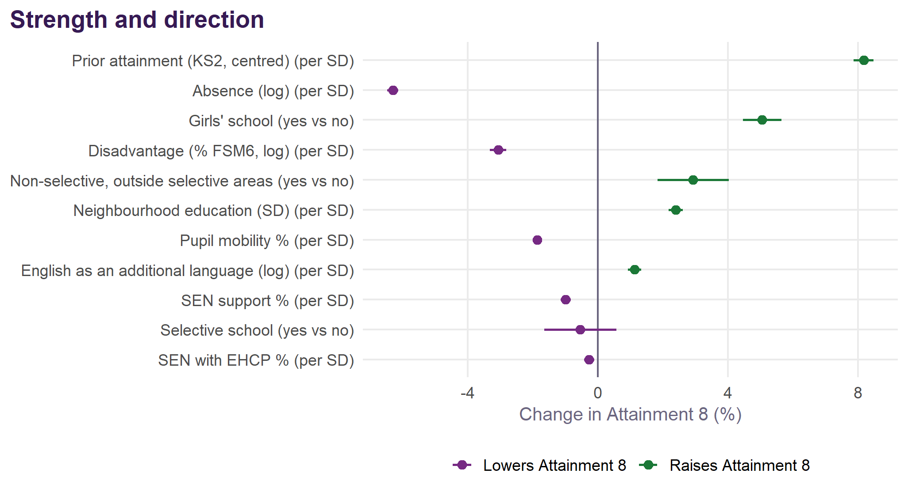
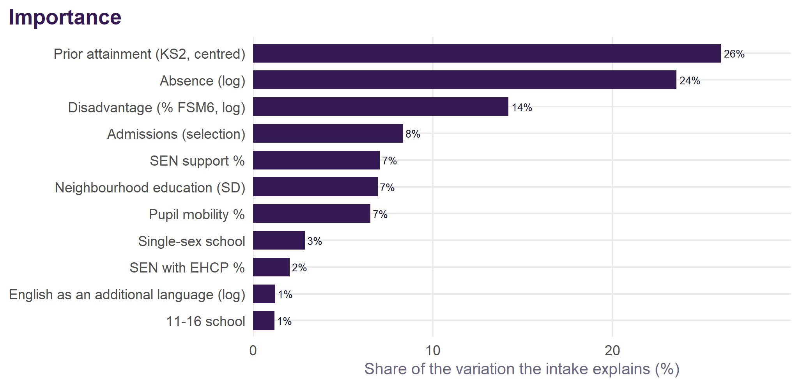
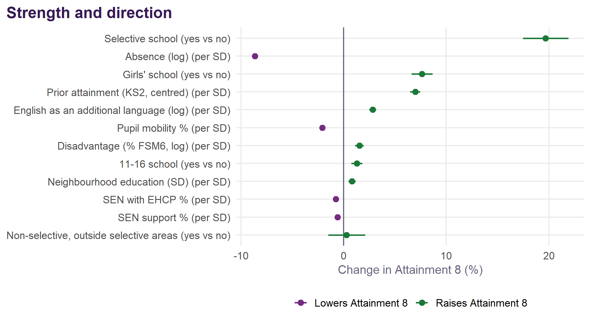
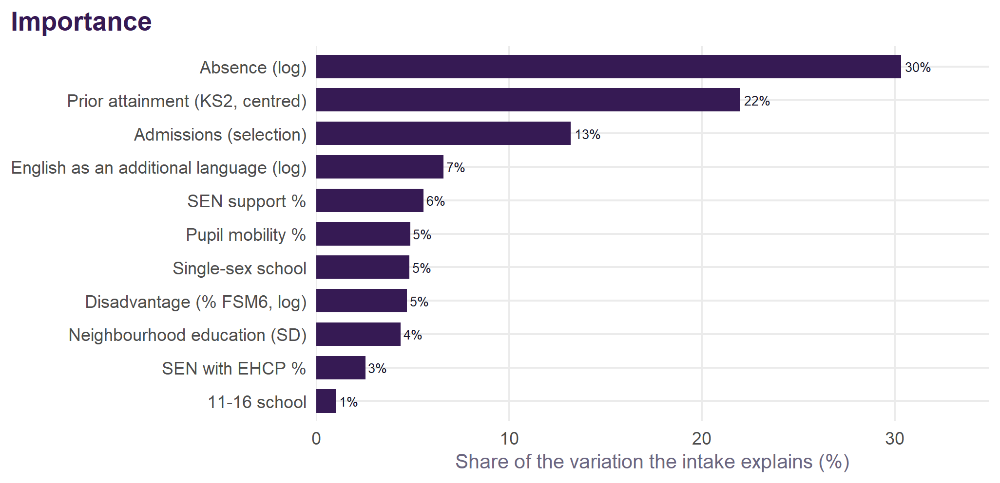
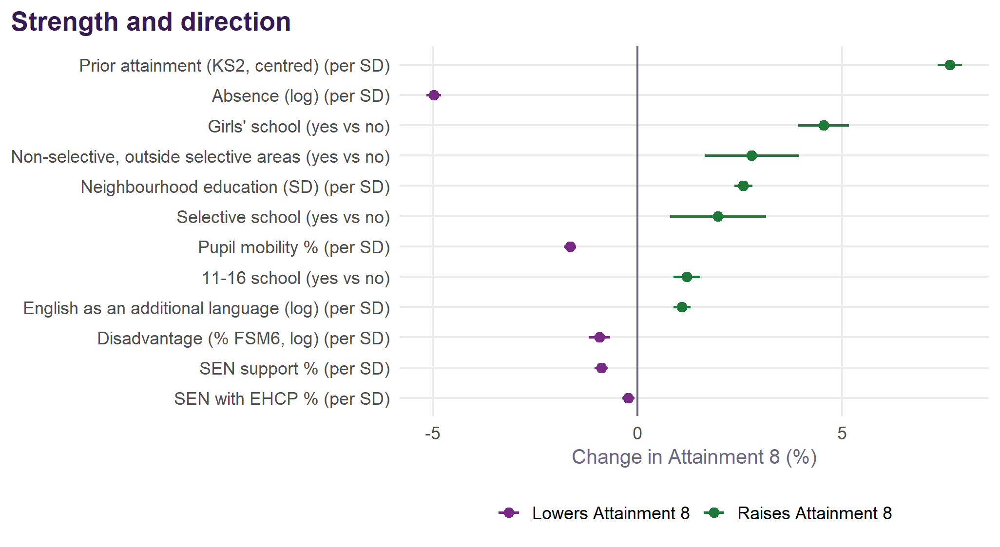
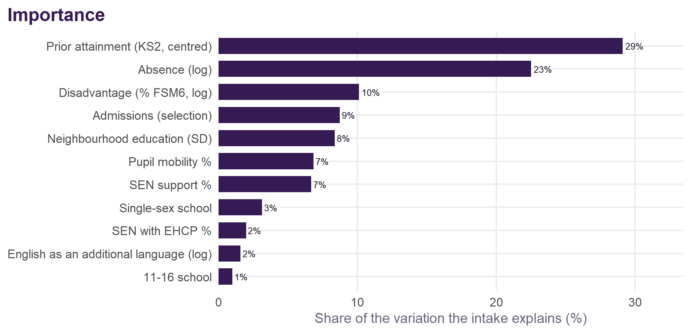
Prior attainment and absence lead on both counts: 26% and 24% of what the intake explains for all pupils, then disadvantage at 14%. For disadvantaged pupils absence comes first. The two views can disagree, and the difference is worth reading: a term with a large effect but little spread across schools (single-sex schools) explains little variation, and one that moves with others shares its credit. Neither is a causal ranking.
The full v2.1 specification, group by group
For school \(i\) in local authority \(l\), region \(r\) and year \(t\), and for each pupil group \(g\) (all, disadvantaged, non-disadvantaged, girls, boys) separately:
\[ \begin{aligned} \log(\text{Att8}^{g}_{it}) = \;& \beta_0 + \beta_1 \log(\text{FSM6}_{it}) + \beta_2 \log(\text{absence}_{it}) + \beta_3 \log(\text{EAL}_{it}) + \beta_4\, \text{KS2}_{it} \\ &+ \beta_5\, \text{selective}_{i} + \beta_6\, \text{non-selective elsewhere}_{i} + \beta_7\, \text{neighbourhood}_{i} \\ &+ \beta_8\, \text{SEN support}_{it} + \beta_9\, \text{EHCP}_{it} + \beta_{10}\, \text{mobility}_{it} + \beta_{11}\, \text{single-sex}_{i} + \beta_{12}\, \text{11--16}_{i} \\ &+ u_t + v_r + w_{l(r)} + e_{it} \end{aligned} \]
\[u_t \sim N(0, \sigma^2_\text{year}), \quad v_r \sim N(0, \sigma^2_\text{region}), \quad w_{l(r)} \sim N(0, \sigma^2_\text{LA}), \quad e_{it} \sim N(0, \sigma^2)\]
FSM6 is the share of the KS4 cohort disadvantaged; absence the overall absence rate; EAL the share with English as an additional language; KS2 the cohort’s mean KS2 scaled score less 100; admissions are relative to a non-selective school in a highly selective area; neighbourhood is the share of adults qualified to level 4+ in the 150 nearest Census output areas, standardised; SEN support, EHCP and mobility are percentages of pupils; single-sex is a girls’ school (for boys, a boys’ school); 11–16 is a school that stops at 16. Local authorities are nested in regions. Fitted by restricted maximum likelihood in lme4 (R/02_fit_va.R); log-likelihood, AIC and BIC are from the maximum-likelihood refit. R² is Nakagawa’s: marginal for the fixed effects alone, conditional with the random effects too.
| Term | Unit | Estimate | SE | t | Effect on Attainment 8 (95% interval) |
|---|---|---|---|---|---|
| Intercept | +4.3773 | 0.0227 | 193.1 | ||
| Disadvantage (% FSM6, log) | elasticity | -0.0518 | 0.0021 | -24.1 | -0.052% per 1% |
| Absence (log) | elasticity | -0.2304 | 0.0033 | -69.3 | -0.230% per 1% |
| English as an additional language (log) | elasticity | +0.0103 | 0.0009 | 11.2 | +0.010% per 1% |
| Prior attainment (KS2, centred) | per scaled-score point | +0.0284 | 0.0005 | 54.8 | +2.89% (+2.78 to +2.99) |
| Non-selective elsewhere (vs non-selective in a selective area) | yes vs no | +0.0266 | 0.0054 | 4.9 | +2.70% (+1.61 to +3.80) |
| Selective (vs non-selective in a selective area) | yes vs no | -0.0086 | 0.0057 | -1.5 | -0.86% (-1.95 to +0.25) |
| Neighbourhood education (SD) | per SD | +0.0241 | 0.0011 | 22.4 | +2.44% (+2.22 to +2.66) |
| SEN support % | per percentage point | -0.0019 | 0.0001 | -12.7 | -0.19% (-0.21 to -0.16) |
| SEN with EHCP % | per percentage point | -0.0019 | 0.0005 | -4.1 | -0.19% (-0.27 to -0.10) |
| Pupil mobility % | per percentage point | -0.0049 | 0.0002 | -25.0 | -0.49% (-0.53 to -0.45) |
| Girls’ school | yes vs no | +0.0482 | 0.0029 | 16.6 | +4.94% (+4.34 to +5.54) |
| 11-16 school | yes vs no | +0.0107 | 0.0016 | 6.5 | +1.08% (+0.75 to +1.40) |
| Level | Variance | SD | Share of variance |
|---|---|---|---|
| Local authority (within region) | 0.00059 | 0.0243 | 8.0% |
| Region | 0.00021 | 0.0145 | 2.9% |
| Year | 0.00144 | 0.0379 | 19.6% |
| Residual (school-year) | 0.00511 | 0.0715 | 69.5% |
| Measure | Value |
|---|---|
| School-years | 12,839 |
| Schools | 3,265 |
| Local authorities | 152 |
| Regions | 9 |
| Years | 4 |
| Log-likelihood (ML) | 15470.0 |
| AIC | -30906.0 |
| BIC | -30779.2 |
| Marginal R² | 0.807 |
| Conditional R² | 0.866 |
| Residual SD (log scale) | 0.0715 |
| Persistent school SD, against England | 0.0637 |
| Reliability of a four-year figure | 0.88 |
| Term | Unit | Estimate | SE | t | Effect on Attainment 8 (95% interval) |
|---|---|---|---|---|---|
| Intercept | +4.1054 | 0.0330 | 124.5 | ||
| Disadvantage (% FSM6, log) | elasticity | +0.0265 | 0.0038 | 7.0 | +0.027% per 1% |
| Absence (log) | elasticity | -0.3249 | 0.0055 | -59.0 | -0.325% per 1% |
| English as an additional language (log) | elasticity | +0.0248 | 0.0015 | 16.5 | +0.025% per 1% |
| Prior attainment (KS2, centred) | per scaled-score point | +0.0254 | 0.0009 | 29.2 | +2.57% (+2.40 to +2.75) |
| Non-selective elsewhere (vs non-selective in a selective area) | yes vs no | +0.0029 | 0.0091 | 0.3 | +0.29% (-1.49 to +2.10) |
| Selective (vs non-selective in a selective area) | yes vs no | +0.1797 | 0.0095 | 19.0 | +19.68% (+17.48 to +21.93) |
| Neighbourhood education (SD) | per SD | +0.0082 | 0.0018 | 4.6 | +0.82% (+0.47 to +1.17) |
| SEN support % | per percentage point | -0.0011 | 0.0002 | -4.4 | -0.11% (-0.15 to -0.06) |
| SEN with EHCP % | per percentage point | -0.0044 | 0.0007 | -5.9 | -0.44% (-0.58 to -0.29) |
| Pupil mobility % | per percentage point | -0.0057 | 0.0003 | -16.9 | -0.57% (-0.64 to -0.50) |
| Girls’ school | yes vs no | +0.0736 | 0.0049 | 15.0 | +7.64% (+6.61 to +8.68) |
| 11-16 school | yes vs no | +0.0127 | 0.0027 | 4.7 | +1.28% (+0.74 to +1.81) |
| Level | Variance | SD | Share of variance |
|---|---|---|---|
| Local authority (within region) | 0.00136 | 0.0369 | 7.4% |
| Region | 0.00070 | 0.0264 | 3.8% |
| Year | 0.00257 | 0.0507 | 14.0% |
| Residual (school-year) | 0.01370 | 0.1170 | 74.7% |
| Measure | Value |
|---|---|
| School-years | 12,701 |
| Schools | 3,254 |
| Local authorities | 151 |
| Regions | 9 |
| Years | 4 |
| Log-likelihood (ML) | 9054.5 |
| AIC | -18074.9 |
| BIC | -17948.3 |
| Marginal R² | 0.642 |
| Conditional R² | 0.733 |
| Residual SD (log scale) | 0.1170 |
| Persistent school SD, against England | 0.0838 |
| Reliability of a four-year figure | 0.76 |
| Term | Unit | Estimate | SE | t | Effect on Attainment 8 (95% interval) |
|---|---|---|---|---|---|
| Intercept | +4.2275 | 0.0214 | 197.5 | ||
| Disadvantage (% FSM6, log) | elasticity | -0.0163 | 0.0023 | -6.9 | -0.016% per 1% |
| Absence (log) | elasticity | -0.1831 | 0.0034 | -53.9 | -0.183% per 1% |
| English as an additional language (log) | elasticity | +0.0096 | 0.0009 | 10.3 | +0.010% per 1% |
| Prior attainment (KS2, centred) | per scaled-score point | +0.0277 | 0.0005 | 51.5 | +2.81% (+2.70 to +2.92) |
| Non-selective elsewhere (vs non-selective in a selective area) | yes vs no | +0.0274 | 0.0057 | 4.8 | +2.78% (+1.64 to +3.93) |
| Selective (vs non-selective in a selective area) | yes vs no | +0.0194 | 0.0059 | 3.3 | +1.96% (+0.79 to +3.13) |
| Neighbourhood education (SD) | per SD | +0.0255 | 0.0011 | 23.3 | +2.58% (+2.36 to +2.80) |
| SEN support % | per percentage point | -0.0016 | 0.0001 | -10.7 | -0.16% (-0.19 to -0.13) |
| SEN with EHCP % | per percentage point | -0.0013 | 0.0005 | -2.9 | -0.13% (-0.22 to -0.04) |
| Pupil mobility % | per percentage point | -0.0045 | 0.0002 | -21.5 | -0.45% (-0.49 to -0.41) |
| Girls’ school | yes vs no | +0.0444 | 0.0030 | 14.7 | +4.54% (+3.92 to +5.16) |
| 11-16 school | yes vs no | +0.0120 | 0.0017 | 7.2 | +1.21% (+0.88 to +1.54) |
| Level | Variance | SD | Share of variance |
|---|---|---|---|
| Local authority (within region) | 0.00056 | 0.0236 | 7.7% |
| Region | 0.00026 | 0.0160 | 3.6% |
| Year | 0.00115 | 0.0339 | 16.0% |
| Residual (school-year) | 0.00522 | 0.0723 | 72.7% |
| Measure | Value |
|---|---|
| School-years | 12,701 |
| Schools | 3,254 |
| Local authorities | 151 |
| Regions | 9 |
| Years | 4 |
| Log-likelihood (ML) | 15174.9 |
| AIC | -30315.8 |
| BIC | -30189.1 |
| Marginal R² | 0.742 |
| Conditional R² | 0.812 |
| Residual SD (log scale) | 0.0723 |
| Persistent school SD, against England | 0.0623 |
| Reliability of a four-year figure | 0.87 |
| Term | Unit | Estimate | SE | t | Effect on Attainment 8 (95% interval) |
|---|---|---|---|---|---|
| Intercept | +4.4305 | 0.0244 | 181.5 | ||
| Disadvantage (% FSM6, log) | elasticity | -0.0557 | 0.0024 | -22.8 | -0.056% per 1% |
| Absence (log) | elasticity | -0.2255 | 0.0038 | -59.5 | -0.225% per 1% |
| English as an additional language (log) | elasticity | +0.0108 | 0.0010 | 10.7 | +0.011% per 1% |
| Prior attainment (KS2, centred) | per scaled-score point | +0.0260 | 0.0006 | 44.6 | +2.63% (+2.51 to +2.75) |
| Non-selective elsewhere (vs non-selective in a selective area) | yes vs no | +0.0300 | 0.0064 | 4.7 | +3.04% (+1.75 to +4.35) |
| Selective (vs non-selective in a selective area) | yes vs no | -0.0075 | 0.0069 | -1.1 | -0.75% (-2.08 to +0.60) |
| Neighbourhood education (SD) | per SD | +0.0225 | 0.0012 | 18.9 | +2.28% (+2.04 to +2.52) |
| SEN support % | per percentage point | -0.0021 | 0.0002 | -12.9 | -0.21% (-0.24 to -0.18) |
| SEN with EHCP % | per percentage point | -0.0026 | 0.0005 | -5.1 | -0.26% (-0.36 to -0.16) |
| Pupil mobility % | per percentage point | -0.0055 | 0.0002 | -24.1 | -0.55% (-0.59 to -0.51) |
| Girls’ school | yes vs no | +0.0160 | 0.0034 | 4.8 | +1.62% (+0.95 to +2.29) |
| 11-16 school | yes vs no | +0.0113 | 0.0018 | 6.2 | +1.14% (+0.78 to +1.50) |
| Level | Variance | SD | Share of variance |
|---|---|---|---|
| Local authority (within region) | 0.00060 | 0.0245 | 7.1% |
| Region | 0.00018 | 0.0133 | 2.1% |
| Year | 0.00164 | 0.0405 | 19.3% |
| Residual (school-year) | 0.00607 | 0.0779 | 71.5% |
| Measure | Value |
|---|---|
| School-years | 12,186 |
| Schools | 3,109 |
| Local authorities | 152 |
| Regions | 9 |
| Years | 4 |
| Log-likelihood (ML) | 13643.2 |
| AIC | -27252.3 |
| BIC | -27126.4 |
| Marginal R² | 0.750 |
| Conditional R² | 0.821 |
| Residual SD (log scale) | 0.0779 |
| Persistent school SD, against England | 0.0609 |
| Reliability of a four-year figure | 0.82 |
| Term | Unit | Estimate | SE | t | Effect on Attainment 8 (95% interval) |
|---|---|---|---|---|---|
| Intercept | +4.3657 | 0.0235 | 186.1 | ||
| Disadvantage (% FSM6, log) | elasticity | -0.0552 | 0.0027 | -20.1 | -0.055% per 1% |
| Absence (log) | elasticity | -0.2377 | 0.0042 | -56.8 | -0.238% per 1% |
| English as an additional language (log) | elasticity | +0.0098 | 0.0011 | 8.9 | +0.010% per 1% |
| Prior attainment (KS2, centred) | per scaled-score point | +0.0296 | 0.0006 | 46.1 | +3.01% (+2.88 to +3.14) |
| Non-selective elsewhere (vs non-selective in a selective area) | yes vs no | +0.0163 | 0.0070 | 2.3 | +1.64% (+0.25 to +3.06) |
| Selective (vs non-selective in a selective area) | yes vs no | +0.0032 | 0.0077 | 0.4 | +0.32% (-1.18 to +1.85) |
| Neighbourhood education (SD) | per SD | +0.0279 | 0.0013 | 21.1 | +2.83% (+2.56 to +3.10) |
| SEN support % | per percentage point | -0.0015 | 0.0002 | -8.3 | -0.15% (-0.18 to -0.11) |
| SEN with EHCP % | per percentage point | -0.0015 | 0.0005 | -2.8 | -0.15% (-0.26 to -0.05) |
| Pupil mobility % | per percentage point | -0.0049 | 0.0003 | -19.6 | -0.49% (-0.54 to -0.44) |
| Boys’ school | yes vs no | +0.0139 | 0.0043 | 3.2 | +1.40% (+0.54 to +2.26) |
| 11-16 school | yes vs no | +0.0105 | 0.0020 | 5.3 | +1.06% (+0.67 to +1.46) |
| Level | Variance | SD | Share of variance |
|---|---|---|---|
| Local authority (within region) | 0.00068 | 0.0261 | 7.2% |
| Region | 0.00027 | 0.0165 | 2.9% |
| Year | 0.00127 | 0.0357 | 13.4% |
| Residual (school-year) | 0.00726 | 0.0852 | 76.5% |
| Measure | Value |
|---|---|
| School-years | 11,988 |
| Schools | 3,056 |
| Local authorities | 152 |
| Regions | 9 |
| Years | 4 |
| Log-likelihood (ML) | 12347.4 |
| AIC | -24660.8 |
| BIC | -24535.1 |
| Marginal R² | 0.755 |
| Conditional R² | 0.812 |
| Residual SD (log scale) | 0.0852 |
| Persistent school SD, against England | 0.0671 |
| Reliability of a four-year figure | 0.82 |
The same, as pictures: each term’s effect on expected Attainment 8 with its 95% interval, on a common scale (a standard deviation for a measure, yes against no for a flag), and how closely the fitted values follow the observed ones, school-year by school-year.
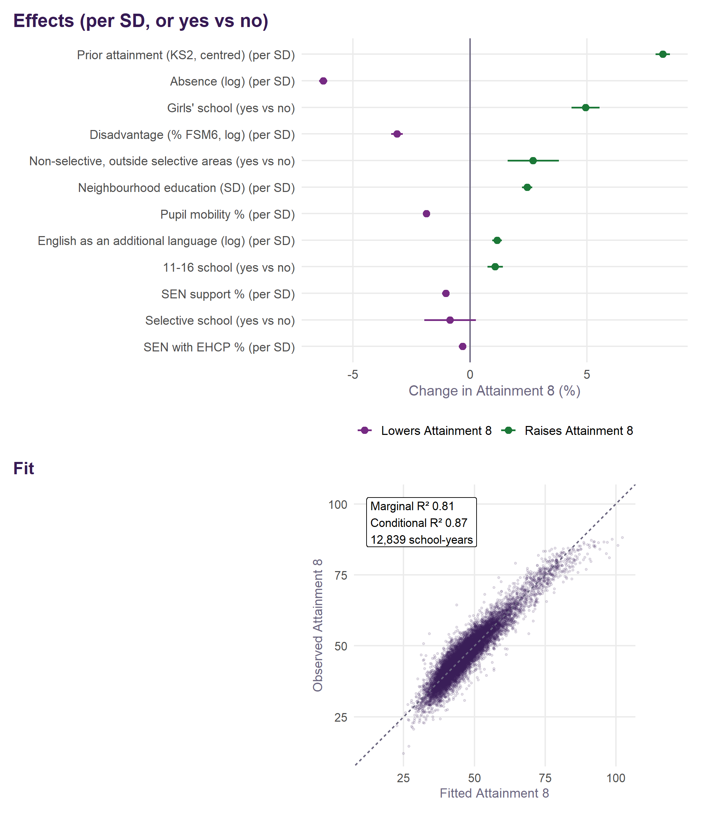
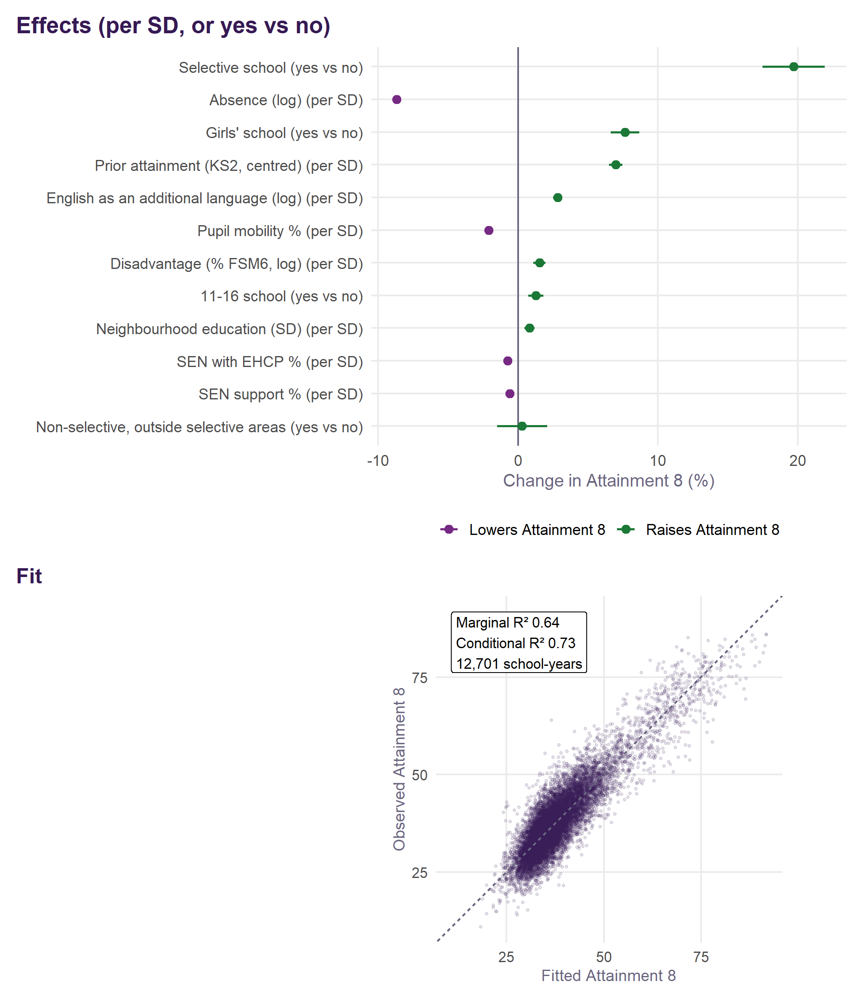
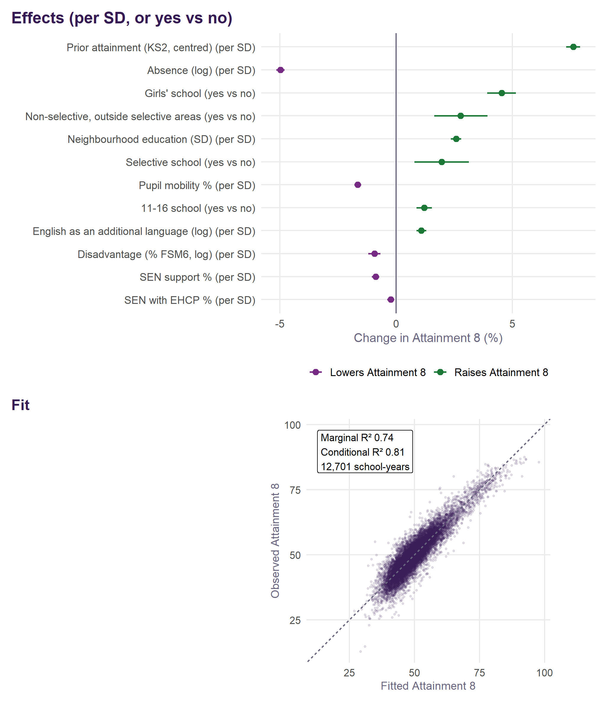
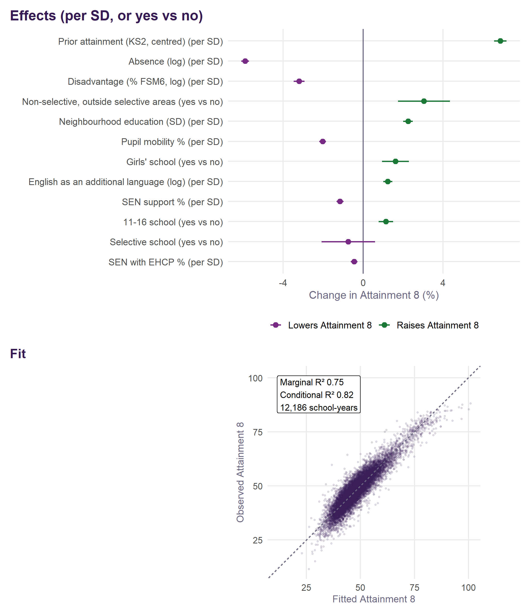
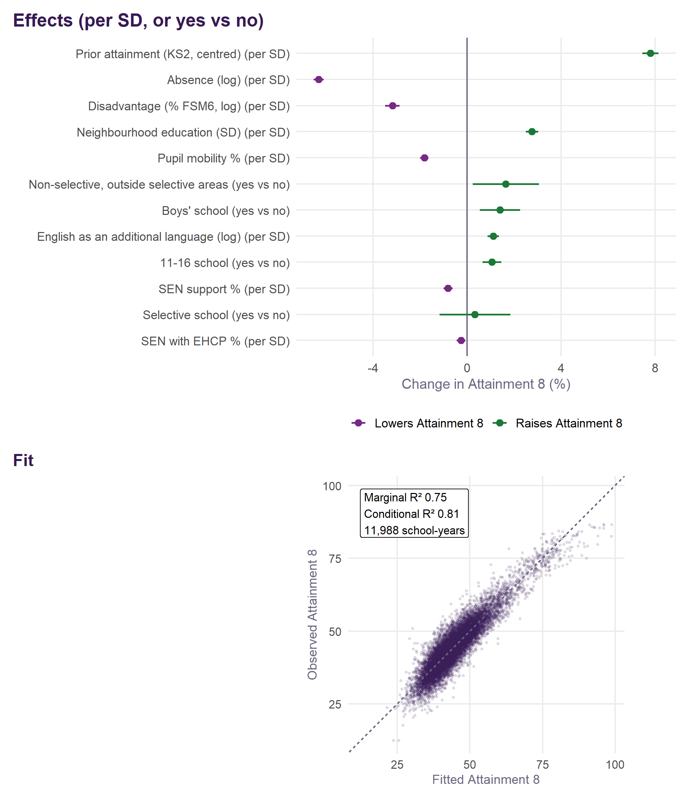
Shrinkage, and what the four-year figure is
A school’s headline figure is not the plain mean of its yearly value added. It is an empirical Bayes estimate: that mean pulled towards zero by as much of it as the evidence will carry. The weight it keeps is its reliability,
\[\lambda = \frac{\tau^2}{\tau^2 + \sigma^2/n}\]
with \(\sigma^2\) the year-to-year variance within a school, \(\tau^2\) the persistent variance between schools, and \(n\) the school’s own number of years — not four. Both variances come from the second fit, the one carrying a school random intercept, so \(\sigma^2\) is what is left once a school’s own level is accounted for.
A school with a long record keeps nearly all of its mean. A school with two years keeps less, because on that much evidence most of its distance from the average is sampling noise. Reliability depends only on \(n\) and the group’s two variances, so every school in a group with the same number of years carries the same weight.
| Years of data | Schools | Reliability (lambda) |
|---|---|---|
| 1 | 3 | 0.66 |
| 2 | 53 | 0.79 |
| 3 | 125 | 0.85 |
| 4 | 3,076 | 0.88 |
| 5 | 4 | 0.91 |
| 7 | 1 | 0.93 |
| 8 | 3 | 0.94 |
What is Bayesian here, and what is not
\(\lambda\bar r\) is exactly the posterior mean of a school’s effect under a normal prior centred on zero with variance \(\tau^2\). The arithmetic is Bayesian; the prior is not chosen. \(\tau^2\) and \(\sigma^2\) are estimated by REML from the same data the shrinkage is then applied to, which makes this empirical Bayes rather than Bayes. There is no hyperprior, no sampling and nothing to converge: the posterior is Gaussian and closed form.
The price is that the intervals treat \(\tau^2\) and \(\sigma^2\) as known. They carry the uncertainty in a school’s own mean, not the uncertainty in the variances used to shrink it, so they are a little tighter than a fully Bayesian treatment would give — most so for the groups with the fewest schools.
Two variances, because there are two questions
Against England, a school is credited with everything that separates it from the national picture, its authority and its region included. The prior variance for that comparison is therefore all three persistent components together:
\[\tau^2_\text{England} = \tau^2_\text{school} + \tau^2_\text{LA} + \tau^2_\text{region}\]
Within the authority, the authority and region effects are already in the prediction and are not the school’s to own, so the prior variance is the school component alone. The national figure is the less shrunk of the two: there is more real variation there for it to be variation of. For all pupils that is \(\tau_\text{England} = 0.064\) against \(\tau_\text{school} = 0.059\) on the log scale.
Back to Attainment 8 points
Shrinkage happens on the log scale, where the model is additive. The shrunken effect is converted against the school’s own mean expected Attainment 8:
\[\text{value added} = \text{base}\left(e^{\lambda\bar r} - 1\right)\]
and its 95% interval the same way, from \(\lambda\bar r \pm 1.96\sqrt{\lambda\sigma^2/n}\). A school counts as significant where that interval excludes zero.
This is a different quantity from the plain four-year mean sitting beside it in the tables: that one averages observed minus expected in points, while this one shrinks a mean log residual and then converts it. For most schools the two are close. For schools with short records or unusual intakes they are not, and the shrunken figure is the one to read.
How v2.1 compares with v1
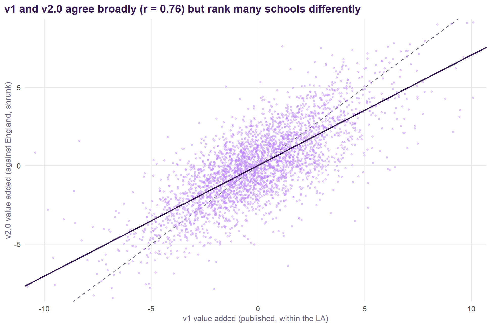
| Group | Schools | r, v2 against England | r, v2 within the LA | Schools changing quintile |
|---|---|---|---|---|
| All pupils | 3,235 | 0.75 | 0.82 | 57% |
| Disadvantaged | 3,235 | 0.78 | 0.89 | 52% |
| Non-disadvantaged | 3,235 | 0.77 | 0.85 | 56% |
The two measures agree broadly but not closely: 57% of schools fall in a different quintile on v2.1 for all pupils. Measured within the authority, as v1 was, the correlation is 0.82. The remaining difference is the specification: the Ofsted grade and workforce terms coming out, and the new intake terms going in. The review sets out how much each change contributes.
Girls and boys
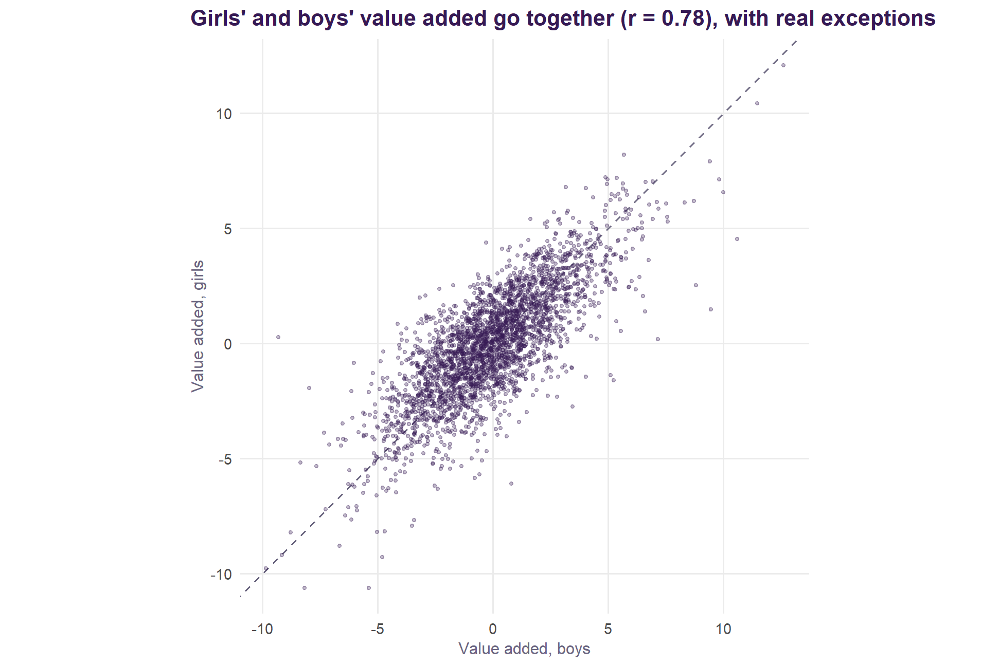
Girls’ and boys’ value added correlate 0.78 across the 2,901 schools with both. In 181 schools the two differ by more than three points. The girls’ and boys’ models use the same intake terms, measured for the whole school; the DfE publishes Attainment 8 by sex but not intake by sex, so a school’s intake of girls and of boys is assumed alike.
Schools and years left out
Attainment 8 only measures a school fairly if its pupils take the qualifications it counts. A school-year is left out of every v2.1 model, and so has no value added for that year, when either:
- its pupils averaged fewer than three GCSE entries, so the school does not mainly take GCSEs (England’s median is about seven). UTCs and studio schools that take technical qualifications counting towards Attainment 8 sit well above this line; or
- fewer than half of its pupils achieved any qualification, an anomalous year.
The rule is about what was entered, not how low the results were, so a school with weak results is never excluded for them.
| School | Local authority | Reason | Years | Attainment 8 | GCSE entries per pupil | Pupils with any qualification % | Still has value added |
|---|---|---|---|---|---|---|---|
| Manchester Mesivta School | Bury | Fewer than half of pupils achieved any qualification | 2021/22 | 9.0 | 6.9 | 34 | Yes, other years |
| Stephenson Studio School | Leicestershire | Fewer than three GCSE entries per pupil | 2021/22 | 12.0 | 2.7 | 82 | Yes, other years |
| Europa School UK | Oxfordshire | Fewer than three GCSE entries per pupil | 2021/22, 2022/23, 2023/24, 2024/25 | 19.3, 18.8, 0.8, 0.9 | 2.1, 2.1, 0.1, 0.1 | 100, 100, 9, 7 | No |
6 school-years from 3 schools are left out. A school with no value added is also left out of the provisional 2025/26 figures, for which DfE has not yet published entry data.
2025/26, provisional
WarningProvisional, and to be updated in February 2027
2025/26 is provisional: predicted from the v2.1 model using DfE’s provisional KS4 results (October 2026), with absence bridged from autumn and spring and the intake data not yet published carried forward. It will be updated with the revised KS4 release in February 2027.
DfE has published provisional KS4 results for 2025/26, but not yet the year’s school census, SEN or mobility data. So 2025/26 is not part of the fitted model. Instead each school’s 2025/26 result is set against what the fitted v2.1 model predicts for it, as the original project did when it extended v1. The four model years do not move.
- Absence. 2025/26 publishes autumn and spring only. Full-year absence is estimated from the two-term figure by a log-log fit on every earlier school-year with both (R² = 0.968, 12,958 school-years).
- Carried forward from each school’s latest earlier year: prior attainment (KS2), SEN support and EHCP rates, pupil mobility, the single-sex flag and whether the school stops at 16. Disadvantage and EAL are 2025/26’s own; neighbourhood education is the 2021 Census figure, as for every year.
- The year effect for 2025/26 is set so England’s schools average zero, as the model’s year effects do for the fitted years.
- Not shrunk. It is one provisional year, shown beside the four-year figure, never averaged into it.
| Group | Schools | Correlation with four-year value added |
|---|---|---|
| All pupils | 3,134 | 0.68 |
| Boys | 2,932 | 0.63 |
| Disadvantaged | 3,108 | 0.55 |
| Girls | 2,984 | 0.59 |
| Non-disadvantaged | 3,108 | 0.69 |
3,210 schools have a provisional 2025/26 figure. A single year agrees with the four-year measure at 0.68 for all pupils and less for the smaller groups (0.55 for disadvantaged pupils), which is why it is reported as a separate, provisional column. The figures are in va_2526_provisional.csv.
Value added over time
The four-year figure is the school’s average over 2021/22 to 2024/25, shrunk towards England by its reliability. The same model also gives a figure for each year: the school’s Attainment 8 that year against what the model expects from that year’s intake and context, with that year’s effect for England taken out (va_nat for the school-year). Yearly figures are not shrunk, so a small cohort or an unusual year moves them more. 2025/26 is the provisional year described above.
Schools that do well one year mostly do well the next, but not entirely:
| Group | Adjacent years (average) | First year against last |
|---|---|---|
| All pupils | 0.67 | 0.46 |
| Disadvantaged | 0.48 | 0.32 |
| Non-disadvantaged | 0.64 | 0.47 |
| Girls | 0.54 | 0.38 |
| Boys | 0.57 | 0.42 |
For all pupils, adjacent years correlate at 0.67 and 2021/22 with 2025/26 at 0.46; for disadvantaged pupils, where cohorts are smaller, at 0.48 and 0.32. Value added changes gradually, and part of any one year’s movement is noise.
That is why the explorer and the area pages offer a centred moving average: the mean of the yearly figures over a window of one, three or five years centred on a chosen year. A three-year average centred on 2023/24 is the mean of 2022/23, 2023/24 and 2024/25. A window that runs past the first or last year uses the years there are, so a three-year average centred on 2021/22 covers two years. A school missing a year is averaged over the years it has. A window that includes 2025/26 includes a provisional figure and is flagged. Moving averages are not shrunk, and the four-year figure remains the headline measure.
What a school adds, and what absence takes away
The home page and every area page set two quantities side by side: what absence is worth, and what schools add. Both come from the fitted all-pupils model; nothing is fitted separately for the charts.
Why the two can be added. Value added is what is left after the model has accounted for intake and context, absence included. A school’s value added therefore contains none of what its absence is worth, and the absence figure contains none of what the school adds. They are separate pieces of the same prediction, so setting them end to end does not count anything twice.
What absence is worth. The model is in logs on both sides: log Attainment 8 depends on log absence with coefficient β = -0.230 (an elasticity: 1% more absence goes with about 0.23% lower Attainment 8). With everything else held fixed, multiplying absence by a ratio r multiplies expected Attainment 8 by r^β. To turn that into points, the proportional change is multiplied by England’s mean Attainment 8, 47.5 (the mean of the school-years the model is fitted on):
\[\text{points} = \bar{A}_{\text{England}} \times \left(r^{\beta} - 1\right)\]
The home page’s waterfall.
| Step | Computed as | Value |
|---|---|---|
| Typical absence | median school | 8.4% |
| High absence | 95th percentile school | 13.0% |
| Ratio r | high ÷ typical | 1.55 |
| Proportional change, r^β − 1 | β = -0.230 | -9.6% |
| What absence takes away | 47.5 × proportional change | -4.6 |
| Typical value added | median school | -0.0 |
| Top-decile value added | 90th percentile school | +3.2 |
| What the school adds back | top decile − median | +3.2 |
| Still short | −(takes away + adds back) | 1.3 |
Each area’s bars. The same arithmetic, with the area in place of the high-absence school. r is the area’s absence over England’s: the mean of its schools’ full-year absence in 2024/25 over the mean of every school’s in England (8.6%). The national β is used throughout, because a dozen schools cannot supply a gradient of their own. The purple bar is the mean of the area’s schools’ four-year shrunk value added, which is already in points against England and needs no conversion. The diamond is the sum. For Brighton and Hove: r = 11.3 ÷ 8.6 = 1.31, so absence is worth 47.5 × -6.0% = -2.8 points; its schools add +1.4; together -1.4.
For disadvantaged pupils the disadvantaged model’s coefficient is used, β = -0.325, 41% steeper than for all pupils. The same move from typical to high absence then takes -13.2% off expected Attainment 8 rather than -9.6%. That proportion is converted to points on disadvantaged pupils’ own mean Attainment 8, 38.4, giving -5.1 points against -4.6 for pupils as a whole. The gap in points is smaller than the gap in gradient because the base is lower; the area pages convert the same way.
What the figures are not.
- Not causal. β describes how attainment differs between schools whose absence differs, once intake is accounted for. It is not what one school would gain by cutting its absence. Absence also stands in for things the model does not measure (see Geographical effects: Brighton and Hove).
- Not the same period. Absence is a single year, 2024/25. Value added is the four-year figure, 2021/22 to 2024/25.
- Shrunk value added. The top decile is of shrunk estimates, which are pulled towards zero. Unshrunk single-year value added spreads wider.
- England’s mean, not the area’s. Points are on England’s mean Attainment 8. An area whose own mean is a few points different would convert at a few per cent more or less.
Value added with no allowance for absence
Value Added v2.1 includes absence in what a school is expected to achieve: a school with more absence is expected to score lower, so it is not marked down for it. That is the right question for “what does the school do with the pupils who attend?”, and it leaves attendance to be judged separately, by absence against intake: how far a school’s absence runs above or below what its intake predicts.
The map also offers value added with no allowance for absence: the same model refitted without its absence term (R/04_place_and_absence.R; v1 called this M2). Now a school’s absence earns it no allowance. It is, almost exactly, Value Added v2.1 less a fixed cost for absence above what the intake predicts. Across England’s schools:
\[\text{no allowance} \approx 1.08 \times \text{Value Added v2.1} -1.09 \times \text{absence against intake}\]
with R² = 0.90. So 372 schools are above expectation on Value Added v2.1 and below it with no allowance for absence. They are schools that achieve well with the pupils who attend, but whose absence runs well above what their intake predicts.
Why the value added and attendance chart uses Value Added v2.1. Plotted against absence against intake, value added with no allowance for absence would contain the very thing on the other axis. The two would correlate at -0.55 across England largely by construction, suggesting that schools which hold attendance add more. With Value Added v2.1 on the vertical axis the correlation is -0.07: adding value and holding attendance are close to independent. The chart therefore asks two separate questions, and value added with no allowance for absence is kept to the map, where it is one number answering both at once.
From v2.0 to v2.1: school structure and the kind of absence
v2.0 counted absence by its amount and treated every school’s structure alike. Brighton and Hove’s authority effect (Geographical effects) suggested both mattered: illness absence goes with a smaller fall in attainment than other absence, and schools that stop at 16 do slightly better. Two terms were tested, for every pupil group, against v2.0 and on identical rows (R/07_v21_candidates.R):
- an 11–16 school: the school stops at 16, with no sixth form;
- the illness share of absence: illness as a percentage of all absence, from DfE’s school absence data by reason (a school averages 52%, with a standard deviation of 16 points).
| Group | Tested | AIC | Out of sample | Illness share | 11–16 | Agreement with v2.0 | Quintile changes |
|---|---|---|---|---|---|---|---|
| All pupils | illness share of absence | -31 | -1.5% | +0.60% (5.7) | 0.998 | 6% | |
| All pupils | 11-16 school | -40 | -0.3% | +1.08% (6.5) | 0.997 | 11% | |
| All pupils | both | -76 | -1.9% | +0.65% (6.1) | +1.14% (6.9) | 0.995 | 12% |
| Disadvantaged | illness share of absence | -19 | -1.2% | +0.80% (4.6) | 0.999 | 5% | |
| Disadvantaged | 11-16 school | -20 | -0.2% | +1.28% (4.7) | 0.998 | 8% | |
| Disadvantaged | both | -42 | -1.4% | +0.85% (4.8) | +1.35% (5.0) | 0.997 | 9% |
| Non-disadvantaged | illness share of absence | +2 | -0.1% | -0.02% (-0.2) | 1.000 | 0% | |
| Non-disadvantaged | 11-16 school | -50 | -0.4% | +1.21% (7.2) | 0.996 | 11% | |
| Non-disadvantaged | both | -48 | -0.5% | +0.02% (0.2) | +1.21% (7.2) | 0.996 | 11% |
| Girls | illness share of absence | -17 | -1.2% | +0.51% (4.3) | 0.999 | 5% | |
| Girls | 11-16 school | -37 | -0.3% | +1.14% (6.2) | 0.997 | 10% | |
| Girls | both | -57 | -1.6% | +0.55% (4.7) | +1.19% (6.5) | 0.995 | 11% |
| Boys | illness share of absence | -15 | -0.8% | +0.53% (4.1) | 0.999 | 4% | |
| Boys | 11-16 school | -26 | -0.2% | +1.06% (5.3) | 0.998 | 8% | |
| Boys | both | -43 | -1.0% | +0.57% (4.3) | +1.11% (5.5) | 0.997 | 9% |
v2.1 adds the 11–16 flag. It improves the fit for every group, by about 1% of expected Attainment 8 (AIC -40 for all pupils). Stopping at 16 is a school’s structure, like its admissions policy, which the model already treats as context: an 11–16 school is now compared with schools like it, and its small structural advantage is no longer counted as value it adds.
The kind of absence is published beside the headline, not in it. The illness share improves the fit for every group but one: a standard deviation more illness in the mix goes with +0.6% for all pupils and +0.8% for disadvantaged pupils, and it predicts the year it was not fitted on better (-1.5% error for all pupils). For non-disadvantaged pupils it does nothing (t = -0.2). But every term in the headline is intake or context, and the illness share is not cleanly either: illness absence is reported by families, but whether an absence is authorised as illness is the school’s decision, and practice differs. In the headline it would credit a school for how it codes absence. So value added allowing for the kind of absence is fitted as v2.1 plus the illness share and published alongside it, on every map. Across England’s schools the two agree at 0.998; 6% of schools change quintile and 20 move by half a point or more.
What the illness share is. It is mostly a fixed feature of a school: 79% of its variation lies between schools rather than from year to year. It falls as disadvantage rises (correlation -0.63) and as absence rises (-0.49): where absence is high, more of it is unauthorised. That is why the Shapley decomposition credits it with a sizeable share of what the intake explains even though its own effect is small: much of what it carries, disadvantage and absence carry too.
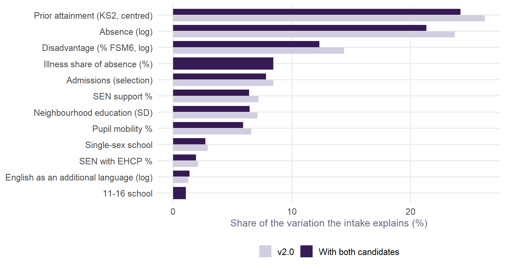
Data
Every school’s v2.0 value added, for every group, with intervals and the within-authority version, is in va_v2_schools.csv. Inputs are the DfE performance tables, school census and absence data, GIAS, the 2021 Census and Ofsted’s monthly management information, downloaded and assembled by this repository’s own pipeline (R/00_fetch_data.R, from the original project’s scripts). Ofsted judgements are refreshed each month. The build is described in the repository README.